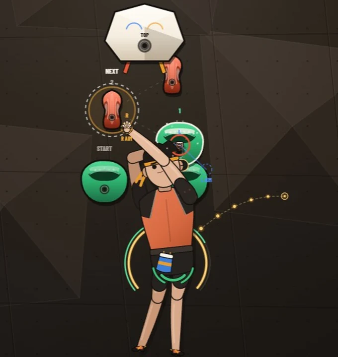
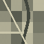
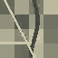
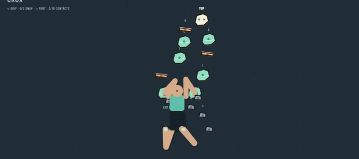
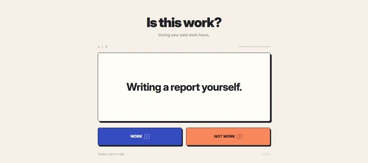
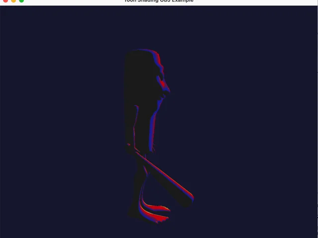
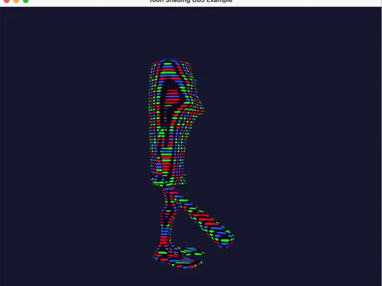

Crux Motion
Climb with your hands. A camera tracks how you grip.

Climb with your hands. A camera tracks how you grip.

Original
ReconstructionHow well does a probability model describe the details in an image?

A climbing puzzle about foot swaps, balance and tired hands.

Eight quick judgments about where work starts and stops.


One model, different ways to draw light and shade.
With Minjae Kwak, Shashwat Bansal and Jaymes Ryan Garbe.